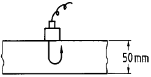
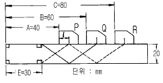
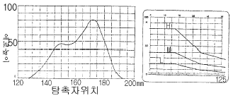
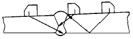
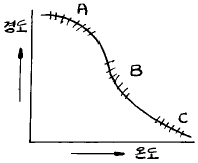
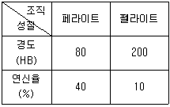

초음파비파괴검사기사(구) (2004-03-07 기출문제)
1과목: 초음파탐상시험원리
1. 침투탐상시험의 실시에 대해 기술한 것으로 올바른 것은?
- 염색침투탐상시험에는 녹색염료를 포함하는 침투액의 사용을 원칙으로 한다.
- 염색침투탐상시험은 자연광 또는 백색광아래에서 백색의 결함지시모양을 관찰하는 것이다.
- 밝은 장소이면 실내, 실외를 불문하고 시험을 하는 것이 가능하다.
- 시험장소의 제약을 받으며 전원, 탐상장치 등을 필요로 한다.
(정답률: 알수없음)

2. 펄스반사법에 의한 초음파탐상시험의 적용한계를 설명한 것으로 틀린 내용은?
- 결함의 종류나 형상을 식별하기가 곤란하다.
- 결정입자의 크기에 영향을 받지 않는다.
- 탐상면이나 기하학적 형상에 영향을 받는다.
- 표면결함에 대해서 자분탐상검사에 비해 검출확률이 떨어진다.
(정답률: 알수없음)
3. 초음파탐상시험에서 공진법은 다음 중 무엇에 이용되는 가?
- 12″ 이상 기울어진 시험체의 두께 측정
- 박판의 벽의 두께 측정
- 열처리하여 경화된 깊이 측정
- 결함의 길이 측정
(정답률: 알수없음)
4. 초음파탐상시험의 분산각에 대한 설명이다. 맞지 않는 것은?
- 파장이 감소하면 빔분산각도 감소한다.
- 진동자의 직경이 감소하면 빔분산각도 감소한다.
- 주파수가 증가하면 빔분산각은 감소한다.
- 속도가 증가하면 빔분산각도 커진다.
(정답률: 알수없음)
5. 비파괴시험의 특성에 대해 기술한 것으로 올바른 것은?
- 컴퓨터 단층촬영법은 파동의 간섭성을 이용하여 본래의 상을 재생하는 홀로그래피(holography)를 이용한 방법이다.
- 와전류탐상시험은 시험체의 탐상이 비접촉인 동시에 고속으로 하기 때문에 봉이나 관의 자동탐상에 적용가능하다.
- 주강품에 내재하는 기공을 검출하는데 가장 적합한 방법은 초음파탐상시험이다.
- 침투탐상시험은 오스테나이트(Austenite)계 스테인레스강의 용접 비드 중에 내재하고 있는 미세한 균열을 검출하는데 적합한 시험방법이다.
(정답률: 알수없음)
6. 그림과 같이 두께 50mm 강판을 수직탐상하여 다중반사 도형을 구했다. B1/B2의 값을 감쇠기로 구했더니 8dB이었다. 이 강판의 초음파의 감쇠정수는? (단, 진동자의 지향성, 접촉상태의 영향 등 보정은 필요없다.)

- 0.8 dB/mm
- 0.08 dB/mm
- 0.016 dB/mm
- 0.16 dB/mm
(정답률: 알수없음)
7. 초음파탐상시험에서 근거리 분해능을 개선해 주는 방법은?
- 주파수를 낮춘다.
- 진동자의 직경을 크게 한다.
- 접촉매질을 많이 바른다.
- 분할형 2진동자 탐촉자를 사용한다.
(정답률: 알수없음)
8. 초음파의 성질을 바르게 나타낸 것은?
- 초음파는 빛과 비슷하여 직진성이 있다.
- 초음파는 서로 다른 2개의 재료 경계면도 곧게 직진 하여 통과한다.
- 초음파는 빔으로 되어 진행하기 때문에 거리가 멀어져도 감쇠하지 않는다.
- 초음파 음속은 주파수의 제곱에 비례하여 변화한다.
(정답률: 알수없음)
9. 탐상면에 수직인 내부결함을 굴절각θ의 탐촉자로 탐상할 때 결함 상단부에 에코가 진행한 빔 진행거리가 WU, 결함 하단부에 에코가 진행한 빔 진행거리가 WL라 할 때 결함 높이 H를 구하는 식은?
- H = (WU - WL)ㆍsecθ
- H = (WU - WL)ㆍtanθ
- H = (WL - WU)ㆍcosθ
- H = WLㆍcosθ - WUㆍsinθ
(정답률: 알수없음)
10. 근거리 음장 한계거리를 가장 작게하는 방법은?
- 진동자의 직경을 작게 하고 주파수를 낮게 한다.
- 진동자의 직경을 크게 하고 주파수를 높게 한다.
- 진동자의 직경을 작게 하고 주파수를 높게 한다.
- 진동자의 직경을 크게 하고 주파수를 낮게 한다.
(정답률: 알수없음)
11. RB-A6 시험편으로 2Q10A 탐촉자의 입사점을 측정하고자 그림과 같은 결과를 얻었다. 탐촉자 앞면에서 입사점까지의 거리는 얼마인가?

- 5㎜
- 10㎜
- 15㎜
- 20㎜
(정답률: 알수없음)
12. 초음파탐상시험시 접촉매질의 적용을 잘못 설명한 것은?
- 시험편과 표면사이의 공기를 제거할 수 있어야 한다.
- 접촉매질의 막은 가능한한 얇은 것을 선택한다.
- 시험재료의 음향임피던스와 차이가 큰것을 사용한다.
- 쉽게 제거되고 쉽게 적용할 수 있어야 한다.
(정답률: 알수없음)
13. 다음 중 경사각 탐촉자에 대해 점검주기가 다른 것은?
- 입사점 및 굴절각
- 감도
- 원거리분해능
- 불감대
(정답률: 알수없음)
14. 평활한 탐상면에 사용하던 것보다 탐상면이 거친 시험체를 초음파탐상시험할 때 적절한 방법은?
- 점도가 낮은 접촉매질과 주파수가 높은 탐촉자를 사용한다.
- 점도가 높은 접촉매질을 사용한다.
- 점도가 높은 탐촉자를 사용한다.
- 점도가 낮은 탐촉자를 사용한다.
(정답률: 알수없음)
15. 다음 중에서 표면파로 검출할 수 있는 결함의 위치는?
- 표면밑 1파장 정도의 깊이
- 표면밑 3파장 정도의 깊이
- 표면밑 5파장 정도의 깊이
- 표면밑 6파장 정도의 깊이
(정답률: 알수없음)
16. 초음파탐상시험시 서로 재질이 다른 금속간의 경계면에서 굴절량을 결정해주는 주 인자는?
- 감쇠계수
- 주파수
- 탄성계수
- 음향 임피던스
(정답률: 알수없음)
17. 3MHz의 주파수로 알루미늄소재에 초음파를 투과시켰을 때 초음파의 파장은 얼마인가? (단, 알루미늄에서 초음파의 종파속도는 6,300m/sec이다.)
- 1.1mm
- 1.6mm
- 2.1mm
- 2.6mm
(정답률: 알수없음)
18. 초음파공명시험에서 1차공명(기본공명)은 시험체의 두께가 음파 파장의 몇 배일 때 발생되는가?
- ½
- 1
- ¼
- 2
(정답률: 알수없음)
19. 원거리 음장영역에서 초음파 빔의 에너지 집중은?
- 빔의 외곽에서 최대가 된다.
- 빔의 중심축 상에서 최대가 된다.
- 빔의 외곽 및 중심에서 동일하게 나타난다.
- 빔의 폭에 비례한다.
(정답률: 알수없음)
20. 경사각 탐촉자로 강재에서 입사각이 45° 이면 이 탐촉자를 알루미늄에 적용했을 때의 입사각은?
- 45° 이상일 것이다.
- 동일한 45° 이다.
- 45° 이하일 것이다.
- 90° 이다.
(정답률: 알수없음)
2과목: 초음파탐상검사
21. 다음 중 초음파탐상시험 방법에 속하지 않는 것은?
- 흡수법
- 공진법
- 투과법
- 펄스 반사법
(정답률: 알수없음)
22. 접촉매질에 대한 설명 중 옳지 않은 것은?
- 수침법의 경우를 제외하고 물은 접촉매질로 사용할 수 없다.
- 직접접촉법에서 글리세린은 양호한 접촉매질이다.
- 탐상조건에 따라 접촉매질로 기계유를 사용해도 된다
- 글리세린은 음향 임피던스가 커서 전달특성이 우수하다.
(정답률: 알수없음)
23. 초음파 비파괴평가기법에 활용되고 있는 초음파의 정보가 아닌 것은?
- 초음파의 RF 신호
- 초음파의 편광정보
- 초음파의 화상정보
- 초음파 스펙트럼 정보
(정답률: 알수없음)
24. 초음파탐상검사에 사용되는 거리진폭보정 곡선에 대한 설명이다. 틀린 것은?
- 감쇠가 큰 재질일수록 기울기가 크다.
- 시간축 거리 보정을 크게 할수록 기울기가 작다.
- 근거리 음장내에서는 곡선을 그리기가 어렵다.
- 인공결함을 이용하여 그린다.
(정답률: 알수없음)
25. 판두께 20㎜의 맞대기 용접부를 5Z10x10A70을 이용하여 STB-A2에 의해 탐상감도를 조정하고 L검출레벨로 설정하여 탐상하고 결함에코를 검출하였다. 최대 에코높이는 80%로 그 때의 진행거리는 50㎜였다. 결함길이를 측정하기 위해 작성한 좌우주사 그래프는 그림과 같다. 결함지시 길이는 얼마인가? (단,에코높이구분선은 그림과 같고 측정범위는 125㎜이다.)

- 20
- 38
- 80
- 48
(정답률: 알수없음)
26. 동일 주파수로 동일한 시험물을 검사시, 경사각 탐상법과 수직 탐상법에서 어느 쪽이 더 작은 결함을 검출할 수 있는가?
- 수직 탐상법
- 경사각 탐상법
- 시험 주파수에 따라 다르다.
- 시험방법에 관계없이 동일하다.
(정답률: 알수없음)
27. 결함의 크기를 평가하는 방법중 DGS선도에 관한 설명으로 옳은 것은?
- 결함의 크기를 등가의 원형 평면 결함의 직경으로 나타내는 방법이다.
- 결함의 크기가 초음파 빔의 폭에 비해 충분히 큰 경우에 적용하기 적합하다.
- 시험주파수가 높을수록 결함형상으로 부터 영향이 적으므로 고주파수를 적용하는 것이 바람직하다.
- 진동자 크기가 큰 것을 사용하는 것이 바람직하다.
(정답률: 알수없음)
28. 단조품에 대한 수직탐상시 저면에코 방법으로 탐상감도를 설정할 경우의 장점이 아닌 것은?
- 표면거칠기를 보정할 필요가 없다.
- 시험체 곡률을 보정할 필요가 없다.
- 시험체 형상에 구애받지 않는다.
- 시험편 방식에 비하여 감도설정이 쉽다.
(정답률: 알수없음)
29. 수침법에 의한 초음파탐상시험시 필요에 따라 음향렌즈를 사용하기도 한다. 이 때 사용되는 음향렌즈에 대한 설명중 옳은 것은?
- 렌즈는 투명해야 한다.
- 전동자에 음향렌즈를 부착하면 음향 집속효과를 갖는 다.
- 빔을 집속하면 검사 유효범위가 넓어진다.
- 볼록렌즈를 사용하는 경우에는 음파가 집속된다.
(정답률: 알수없음)
30. 다음 중 음향임피던스의 차가 가장 큰 물질들로 구성된 것은?
- 철 - 알루미늄
- 알루미늄 - 물
- 알루미늄 - 글리세린
- 글리세린 - 물
(정답률: 알수없음)
31. 초음파탐상시험시 다음 중 통상 어느 지시를 검출할 목적으로 게이트(gate)를 설정하는가?
- 잡음에코
- 결함에코
- 계면에코
- 지연에코
(정답률: 알수없음)
32. 다음 중 초음파 탐촉자의 진동자 재료로 적합하지 않은 것은?
- BaTiO3
- LiSO4
- PbNb2O3
- CaCO3
(정답률: 알수없음)
33. 초음파탐상시험시 에코높이가 불연속의 면적에 비례하여 증가하는 증폭기의 범위는?
- 감도의 범위
- 직선성의 범위
- 선택도의 범위
- 분해능의 범위
(정답률: 알수없음)
34. 초음파탐상시험에 있어서 수직탐상의 감도조정 방법에 대한 설명 중 올바른 것은?
- 탐상감도의 설정방법으로 감도조정용 표준시험편의 표준 구멍으로부터의 에코가 정해진 높이가 되도록 탐상기의 감도를 조정하는 방법을 시험편방식이라 한다.
- 표준시험편을 사용하여 탐상감도를 조정하면 전달손실이나 산란감쇠의 보정은 필요없다.
- 시험체는 대비시험편에 비해 통상 표면이 거칠기 때문에 산란에 의한 감쇠도 크다.
- 시험체의 결함에코가 어느 높이가 되도록 탐상감도를 조정하는 방법을 결함에코 방식이라 하고 표면거칠기나 감쇠, 곡률의 영향을 받지 않는 장점이 있다.
(정답률: 알수없음)
35. 초음파 탐상장치의 표시방법중 시험체의 단면을 표시하는 방식을 무엇이라 하는가?
- A-Scope 표시
- B-Scope 표시
- C-Scope 표시
- D-Scope 표시
(정답률: 알수없음)
36. 알루미늄과 황동의 경계면에서의 종파의 굴절율은? (단, 알루미늄의 밀도 2700㎏/m3, 종파속도 6320m/sec, 횡파속도 3230m/sec 황동의 밀도 8400㎏/m3, 종파속도 4400m/sec, 횡파속도 2200m/sec)
- 1.333
- 1.400
- 1.436
- 1.552
(정답률: 알수없음)
37. 물에서의 초음파속도가 1,500m/s, 강재에서의 초음파속도가 종파와 횡파에 대해서 각각 5,900m/s와 3,200m/s일 때 물에서 강재로 20° 의 입사각을 가지고 종파가 입사될 때 다음의 설명중 맞는 것은?
- 고체에는 종파만이 굴절되어 전파한다.
- 고체에는 횡파만이 굴절되어 전파한다.
- 물로는 모드전환에 의해 종파와 횡파가 모두 반사되어 전파한다.
- 고체에는 종파와 횡파가 모드전환에 의해 모두 굴절 되어 전파한다.
(정답률: 알수없음)
38. 다음 중 탐상기 수신부에 부속된 기능은?
- 리젝션의 조정
- 펄스너비의 조정
- 측정범위의 조정
- 펄스반복주파수의 조정
(정답률: 알수없음)
39. 경사각탐상시 인공대비 반사원으로 측면 드릴구멍(SDH)을 사용하는 이유는?
- 면적진폭 교정을 하기 위하여
- 판재의 두께를 교정하기 위하여
- 횡파의 거리진폭 교정을 하기 위하여
- 탐촉자의 근거리 분해능을 결정하기 위하여
(정답률: 알수없음)
40. 강판의 초음파탐상시험에 대한 설명중 올바른 것은?
- 강판의 건전부에서는 저면에코만이 나타나며 라미네이션이 존재하면 다중반사에 의한 에코가 나타난다.
- 강판의 미소결함의 크기측정에는 6dB drop법의 적용이 유효하다.
- 두꺼운 강판을 국부수침법으로 탐상하면 직접접촉법에 비해 탐상면 조도의 영향을 받기가 쉽다.
- 2곳의 균열 검출에는 텐덤법에 의한 경사각탐상이 유효하다.
(정답률: 알수없음)
3과목: 초음파탐상관련규격및컴퓨터활용
41. 다음의 ASME 규격 중에서 강판에 대한 경사각탐상에 관한 것은?
- SE-114
- SE-214
- SA-577
- SA-388
(정답률: 알수없음)
42. 컴퓨터의 정보에 관한 특성 중 옳지 않은 것은?
- 정보는 시한성을 갖는다.
- 정보는 사용할수록 고갈되어 없어진다.
- 미공개된 정보가 더 가치가 있는 경우가 많다.
- 같은 정보라도 시기, 장소에 따라 중요도가 달라질 수 있다.
(정답률: 알수없음)
43. ASME Sev.V, Art.5에 따라 주조품(Castings)를 초음파탐상검사할 때 사용하는 탐촉자의 진동자 크기 규정이 아닌것은?
- 직경 1인치(25mm)
- 직경 1⅛인치(29mm)
- 직경 1½인치(38mm)
- 최대면적 1인치2(645㎜2)
(정답률: 알수없음)
44. ASME Sev.Ⅰ, Part-PW(용접 보일러)에 따라 초음파탐상검사한 검사보고서를 제작자가 보관하는 최소 기간은?
- 1년
- 3년
- 5년
- 10년
(정답률: 알수없음)
45. 인터넷에서 유즈넷에 게시된 자료를 검색하는 서비스를 무엇이라 하는가?
- 파일 검색
- 고퍼 검색
- 뉴스 검색
- 웹문서 검색
(정답률: 알수없음)
46. 아크용접 강관의 용접부에 대하여 초음파탐상검사를 KS D 0252에 의거 실시하고자 한다. 규격에서 규정하고 있는 자동탐상에 의한 탐상방법에 속하지 않는 것은?
- 접촉매질은 사용하지 않아야 한다.
- 탐상형식은 수침(국부수침)법으로 한다.
- 갭(Gap)법이거나 직접 접촉법으로 한다.
- 원칙적으로 용접선의 양쪽에서 탐상한다.
(정답률: 알수없음)
47. ASME Sec.XI app.Ⅲ에 따라 초음파탐상시험시 사용되는 보정시험편의 인공 결함으로 공식적으로 허용되는 것은?
- 횡 드릴구멍(side-drilled hole)과 평저공
- 횡 드릴구멍과 노치
- 평저공과 노치
- 노치(notch)와 볼트 홈
(정답률: 알수없음)
48. ASME Sec.V, Art.5에 의거 용접부에 대한 초음파탐상시험을 시행하기 위해 필요한 기본 교정시험편을 제작할 경우에 대한 설명으로 올바른 것은?
- 시험편 표면은 시험 대상물의 표면 상태를 대표하는 정도이면 된다.
- 시험편(교정) 재료와 시험 대상물의 열처리상태가 달라도 된다.
- 시험편(교정) 재료는 시험 대상물의 소재와 시방이 달라도 된다.
- 시험편(교정) 재료는 시험 대상물에서 잘라낸 것이라면 재료에 대한 품질검사는 실시하지 않아도 된다.
(정답률: 알수없음)
49. 다음 중 인터넷 문서를 만들 수 있는 응용 프로그램이 아닌 것은?
- 메모장
- MS-word
- 한글 97
- Photo-shop
(정답률: 알수없음)
50. KS B 0896에 따라 일반적인 맞대기이음의 경사각탐상시판두께 40mm이하의 경우 그림과 같이 한쪽면 양쪽에서 탐상할 때 사용하는 탐촉자의 공칭굴절각으로 올바른 것은?

- 굴절각 70°
- 굴절각 70° 와 또는 60°
- 굴절각 70° 와 또는 60° 와 45°
- 굴절각 70° 와 60° 또는 60° 와 45°
(정답률: 알수없음)
51. KS B 0896에 의한 규정의 설명으로 내용이 옳은 것은?
- 판두께가 110mm인 평판 맞대기이음은 1회 반사법으로 검사한다.
- 공칭주파수 4㎒인 수직탐촉자의 분해능은 9mm이상 이어야 한다.
- 접촉매질은 탐상면의 거칠기가 80μm이상이면 농도 75%이상의 글리세린 수용액을 사용해야 한다.
- RB-4의 표준 구멍지름은 시험체 두께가 250mm를 넘는 경우는 50mm를 늘릴 때마다 1.8mm씩 늘린다.
(정답률: 알수없음)
52. 초음파 탐상용 G형 표준시험편 중에서 STB-G, V15-4에서 15는 무엇을 나타내는가?
- 평저공(flat bottomed hole)의 직경이 15mm이다.
- 평저공 반대편에서 평저공 바닥까지의 길이가 15mm 이다.
- 평저공 반대편에서 평저공 바닥까지의 길이가 150mm 이다.
- 시편의 총 길이가 150mm이다.
(정답률: 알수없음)
53. KS B 0896에서 탐상기에 필요한 성능 중 증폭직선성 및 시간축직선성의 범위로 적합한 것은?
- KS B ⑤34에 따라 측정하고, ±5% 범위 이내, ±3%범위 이내
- KS B ⑤34에 따라 측정하고, ±3% 범위 이내, ±1%범위 이내
- KS B ⑤34에 따라 측정하여 +3% 초과하거나 -3% 미만이며, 시간축직선성에 대하여는 ±1% 범위 이내
- KS B ⑤34에 따라 측정하여 ±3% 범위이내, 시간축직선성에 대하여는 ±1% 초과하거나 -1% 미만이어야 함
(정답률: 알수없음)
54. 네트워크에서 여러 대의 컴퓨터를 하나의 케이블로 집중 시키거나 하나의 랜 케이블에 여러 대의 컴퓨터를 연결해 쓸 수 있도록 확장시키는 역할을 하는 것은?
- Gateway
- Router
- Hub
- Hypercube
(정답률: 알수없음)
55. AWS 규격에서는 초음파 빔의 감쇠를 1인치당 몇 dB(감쇠 계수)로 규정하는가? (단, 입사점에서부터의 최초 1인치는 제외)
- 1dB
- 2dB
- 4dB
- 6dB
(정답률: 알수없음)
56. KS B ⑤35에서 규정된 탐상주파수 5MHz, 진동자 재질이 수정, 진동자 크기가 10x20mm인 가변각 탐촉자의 표시방법은?
- 5Q10x20VA
- 50L10x20N
- 50Q10x20S
- 5Z10x20LA
(정답률: 알수없음)
57. KS B 0896에서 경사각 탐상시 H선, M선 및 L선의 결정에 대한 설명중 틀린 것은?
- 목적에 따라 적어도 하위에서 3번째 이상의 선을 선택하여 H선으로 한다.
- H선은 원칙으로 감도 조정 기준선으로 한다.
- H선은 그 높이가 전스크린 높이의 40%이하가 되어서는 안된다.
- H선보다 3㏈ 낮은 에코 높이 구분선은 M선으로 한다.
(정답률: 알수없음)
58. ASME SA-435에 따라 강판을 수직빔 검사를 실시할 때, 평판모서리로부터 몇 인치(in)이내를 주사하도록 요구하는 가?
- 1in
- 2in
- 3in
- 4in
(정답률: 알수없음)
59. 정보통신 시스템을 이루는 요소가 아닌 것은?
- 정보원(source)
- 전송 매체(medium)
- 정보 선택(select)
- 정보 목적지(destination)
(정답률: 알수없음)
60. KS B ⑤35에 의한 굴절각이 40° 인 경사각탐촉자로 굴절 각을 측정하려할 때 STB-A1 표준시험편에서 사용되는 부분은?
- 1.5ø구멍
- 2ø구멍
- 4ø구멍
- 50ø구멍
(정답률: 알수없음)
4과목: 금속재료학
61. 백색 주석(β -Sn)이 회색 주석(α -Sn)으로 변태하는 변태점은 약 어느 정도인가?
- 13℃
- 30℃
- 100℃
- 230℃
(정답률: 알수없음)
62. Mg - Aℓ 계 합금에 소량의 Zn과 Mn을 첨가한 마그네슘 합금은?
- 에렉트론(elektron)합금
- 헤스테로이(hastelloy)
- 모넬(monel)
- 자마크(zamak)
(정답률: 알수없음)
63. 주물용 알루미늄 합금이 아닌 것은?
- 실루민(Silumin)
- 인코넬(Inconel)
- 라우탈(Lautal)
- 로우엑스(Lo-Ex)
(정답률: 알수없음)
64. Chilled 주철에서 Chilled roll의 표면경도를 더욱 단단하게 하기 위한 원소가 아닌 것은?
- Ni
- Mn
- Aℓ
- Mo
(정답률: 알수없음)
65. 지르코늄(Zr)의 특성을 나타낸 것은?
- 비중 6.5, 융점 1852℃, 내식성이 우수하다.
- 비중 9.0, 융점 1083℃, 전기 저항이 적다.
- 비중 2.7, 융점 660℃, 가공성이 양호하다.
- 비중 7.1, 융점 420℃, 경도가 높다.
(정답률: 알수없음)
66. 구리의 절삭성을 개선하는 원소로 가장 적합한 원소는?
- Te
- H
- P
- Cr
(정답률: 알수없음)
67. Fe - C 안정 평형 상태도와 Fe - Fe3C 준안정 평형상태도를 구성하는데 있어서 2성분계 상태도의 기본형과 관계가 없는 것은?
- 공정형
- 공석형
- 포정형
- 편정형
(정답률: 알수없음)
68. 침탄 후 열처리의 1차 담금질(quenching)의 목적은?
- 중심부의 결정입도 미세화
- 표면부의 결정 미세화
- 표면의 경화
- 표면의 연화
(정답률: 알수없음)
69. 강을 풀림할 경우 항온풀림법(isothermal annealing)을 적용 하는 주 목적은?
- 경화를 충분히 시키기 위해서
- 연화 풀림시간의 단축을 위해서
- 분산하기 위해서
- 취성을 촉진하기 위해서
(정답률: 알수없음)
70. Aℓ 의 특징을 열거한 것 중 틀린 것은?
- Aℓ 은 비중 2.7로서 가볍다.
- 내식성, 가공성이 좋다.
- 전기 및 열의 전도도가 좋은편이다.
- 지금(地金)중 Fe,Cu,Mn 같은 원소는 도전율을 좋게 한다.
(정답률: 알수없음)
71. 철 - 탄소계의 합금에 있어서 탄소를 6.67% 함유한 백색 침상(white needle state)의 금속간 화합물의 조직은?
- Ferrite
- Cementite
- Pearlite
- Austenite
(정답률: 알수없음)
72. 다결정 Cu 를 냉간 가공시킨 후 여러 온도에서 풀림을 시킨 결과 그림과 같이 경도-온도 곡선이 구하여 졌을 때 A,B,C 구역에서 일어난 현상을 옳게 나타낸 것은?

- A 구역은 회복,B 구역은 재결정,C 구역은 결정입성장
- A 구역은 재결정,B 구역은 결정입성장,C 구역은 회복
- A 구역은 결정입성장,B 구역은 재결정,C 구역은 회복
- A,B,C 구역 다같이 회복
(정답률: 알수없음)
73. 특수강인 엘린 바아(elinvar)를 설명한 것 중 맞는 것은?
- 팽창계수가 아주 크다.
- 알루미늄 합금금속이다.
- 구리가 다량 함유되어 전도율이 좋다.
- 고급시계의 부품에 사용된다.
(정답률: 알수없음)
74. 내마모성의 용도로 사용 되는 Nihard 또는 고(高)Cr-(Mo) 주철이란 어느 기지 조직의 주철인가?
- Austenite
- Pearlite
- Ferrite
- Martensite
(정답률: 알수없음)
75. 회주철의 가장 강력한 흑연화 촉진 원소는?
- Ni
- Sb
- Cu
- Si
(정답률: 알수없음)
76. 조성이 0.3% C, 3.5% Ni, 1.0% Cr 으로 되는 Ni-Cr강을 담금질하여 650℃ 에서 뜨임 시켰을 때 뜨임취성을 방지하기 위한 가장 효과적인 것은?
- 노냉시킨다.
- 유냉시킨다.
- 수냉시킨다.
- 공냉시킨다.
(정답률: 알수없음)
77. 고망간(12∼14%Mn) 강(steel)을 1000℃로 가열하여 공냉 시켰을 때 상온에서의 조직은?
- Troostite
- Austenite
- Pearlite
- Ferrite
(정답률: 알수없음)
78. 항온변태의 Ms와 CCT를 바르게 설명한 것은?
- 마텐자이트가 발생하는 시기와 연속냉각변태
- 마텐자이트가 완료하는 시기와 변태시간곡선
- 노우스 변태점과 과냉시간곡선
- 노우스 점과 과포화 탄소곡선
(정답률: 알수없음)
79. 과공정 Aℓ - Si합금의 개량처리(modification)에 가장 효과적인 것은?
- Mg 또는 MgCℓ 2
- Na 또는 NaCℓ
- P 또는 PCℓ 5
- Ca 또는 CaCℓ 2
(정답률: 알수없음)
80. 0.4%C의 아공석강(亞共析鋼)이 표준 상태에 있을 때 이 강의 경도와 연신율은 대략 얼마가 되겠는가?(단, 각 조직의 기계적 성질은 표와 같음)

- 경도 140[HB],연신율 25[%]
- 경도 200[HB],연신율 20[%]
- 경도 100[HB],연신율 35[%]
- 경도 280[HB],연신율 50[%]
(정답률: 알수없음)
5과목: 용접일반
81. 불활성가스 텅스텐 아크용접시에 전극봉의 일부분이 용융 풀에 접촉되어 용착금속 내에 들어갔을 경우 이것을 검출할 수 있는 검사방법으로 가장 적합한 것은?
- 누설 검사
- 방사선 투과검사
- 열적외선 검사
- 와전류 탐상검사
(정답률: 알수없음)
82. 용접 결함 중 구조상 결함이 아닌 치수상 결함인 것은?
- 기공
- 슬래그
- 변형
- 언더 컷
(정답률: 알수없음)
83. 피복 금속 아크 용접봉 기호 중 스텐인리스강에 사용하는 용접봉으로 다음 중 가장 적합한 기호는?
- E 4316
- D 5001
- E 3080
- DL 5016
(정답률: 알수없음)
84. 자기 쏠림(Magnetic Blow 또는 Arc Blow)이란 용접 중에 아크가 정방향에서 측방향 또는 한쪽으로 쏠리는 현상을 말하는데 자기쏠림 방지대책으로 적합하지 않은 것은?
- 직류용접기를 사용하지 말고 교류용접기를 사용한다.
- 접지는 용접부로부터 될 수 있는 한 멀리한다.
- 될 수 있는 한 아크 발생을 길게 한다.
- 긴 용접부는 후진 용접법으로 용착한다.
(정답률: 알수없음)
85. 다음 물질 중에서 아세틸렌과 접촉하여도 폭발할 위험성이 없는 것은?
- 철(Fe)
- 동(Cu)
- 은(Ag)
- 수은(Hg)
(정답률: 알수없음)
86. 18-8 스테인레스강의 용접시 발생되는 균열이 아닌 것은?
- 세로 균열
- 오버랩 균열
- 루트 균열
- 크레이터 균열
(정답률: 알수없음)
87. 불활성가스 금속 아크용접에서 와이어(wire) 송급기구 중 지름이 아주 작은 알루미늄 와이어에 가장 적합한 것은?
- 푸시(push)식
- 푸울(pull)식
- 푸시 푸울(push pull)식
- 더불 푸시(double push)식
(정답률: 알수없음)
88. 직류 아크 용접기에서 정극성용접과, 역극성용접이 있다. 일반적으로 정극성(DCSP)용접은 전자의 충격을 받는 양극이 음극보다 발열이 크다. 다음 설명 중 올바른 것은?
- 용접봉의 용융속도가 느리고 모재측 용입이 얕다.
- 용접봉의 용융속도가 빠르고 모재측 용입이 얕다.
- 용접봉의 용융속도가 빠르고 모재측 용입이 깊다.
- 용접봉의 용융속도가 느리고 모재측 용입이 깊다.
(정답률: 알수없음)
89. 용접선 전체를 짧은 용접길이로 나누어 용접길이 만큼 간격을 두면서 용접한 후 다시 되돌아 와서 비워둔 간격들을 차례로 용접하는 용착법은?
- 점진법
- 대칭법
- 후퇴법
- 스킵법
(정답률: 알수없음)
90. 다음 중 가스의 연소열을 이용하여 용접하는 것은?
- 원자수소 용접
- 산소 아세틸렌 용접
- 일렉트로 슬랙 용접
- 탄산가스 아크 용접
(정답률: 알수없음)
91. 용접전류가 200A, 아크전압 25 volt, 용접속도 10cm/min 일 때 용접길이 1cm 당의 용접입열은 얼마인가?
- 4800 Joule/cm
- 20000 Joule/cm
- 30000 Joule/cm
- 40000 Joule/cm
(정답률: 알수없음)
92. 다음의 스테인리스강 중에서 용접시 용접성이 가장 좋은 강은?
- 오스테나이트계 스테인리스강
- 페라이트계 스테인리스강
- 마르텐사이트계 스테인리스강
- 세멘타이트계 스테인리스강
(정답률: 알수없음)
93. 다음 피복 아크 용접봉 중에서 작업성은 나쁘나, 내균열성이 가장 좋은 것은?
- 티티나아계 용접봉
- 고셀룰로스계 용접봉
- 일미나이트계 용접봉
- 저수소계 용접봉
(정답률: 알수없음)
94. 정격 2차전류 400(A) 정격 사용률40(%)인 아크 용접기로 300(A)전류를 사용하여 용접할 때 허용 사용율은?
- 약 50%
- 약 65.2%
- 약 71.1%
- 약 80.2%
(정답률: 알수없음)
95. 가스 절단의 원리를 응용하여 강재의 표면을 얇게 그리고 타원형 모양으로 평탄하게 깍아내는 가공법인 것은?
- 스카핑(scarfing)
- 가우징(gouging)
- 아크 절단(arc cutting)
- 플라스마 제트(plasma jet) 절단
(정답률: 알수없음)
96. 다음 설명 중 직류 아크 용접에서의 역극성(DCRP) 전원의 특성이 아닌 것은?
- 용접 비드의 폭이 넓다.
- 모재의 용입이 깊다.
- 용접봉의 용융속도가 빠르다.
- 주철, 고탄소강 등의 용접에 적합하다.
(정답률: 알수없음)
97. 용접의 변 끝을 따라 모재가 파여지고 용착 금속이 채워 지지 않고 홈으로 남아 있는 부분으로 정의되는 용어는?
- 아크 시일드
- 오버랩
- 아크 스트림
- 언더컷
(정답률: 알수없음)
98. 주철(Cast Iron) 용접 시공시의 주의사항 설명 중 잘못된것은?
- 가능한 한 직선 비드를 배치한다.
- 가는 직경의 용접봉을 사용한다.
- 비드배치는 길게 한번에 끝낸다.
- 용입을 너무 깊게 하지 않는다.
(정답률: 알수없음)
99. 서브머지드 아크용접에서 2개 와이어를 하나의 용접기로부터 같은 콘텍트 팁을 접속하여 용접하는 방법으로 비드가 넓고, 깊은 용입을 얻어지며, 이 방법은 비교적 홈이 크거나 아래보기 자세로 큰 필렛용접을 할 경우에 적합한 것은?
- 횡병열식
- 탄뎀식
- 횡직열식
- 스크래치식
(정답률: 알수없음)
100. 용접법을 3가지로 대분류할 때 포함되지 않은 것은?
- 단접
- 압접
- 납땜
- 융접
(정답률: 알수없음)